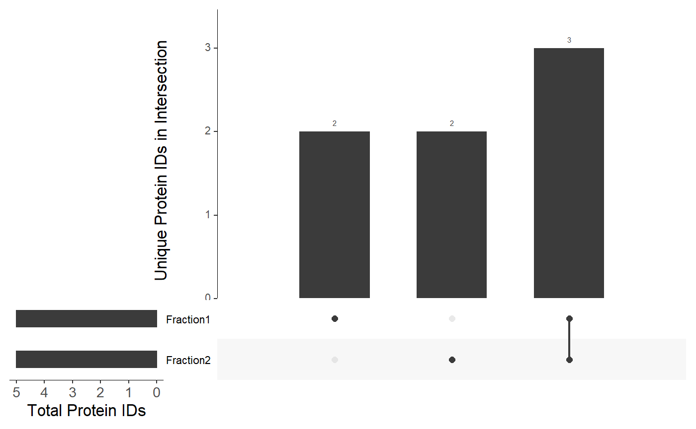
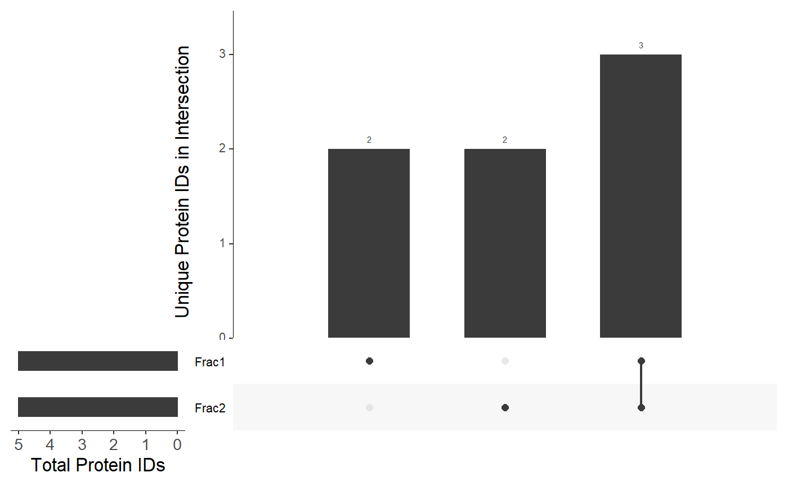

vignettes/making-upset-plot.Rmd
making-upset-plot.RmdA data frame can be passed to to the make_UpSet_plot() argument as suggested in the “Loading and visualizing data” section.
Alternatively, make an UpSet plot by supplying a list of named lists. See the documentation for the UpSetR::upset() function for more information.
list <- list( list( "Fraction1" = c("A", "B", "C", "D", "E"), "Fraction2" = c("C", "D", "E", "F", "G") ) ) viztools::make_UpSet_plot(list)

You can also supply any data frame with column names corresponding to fraction/replicate designations:
df <- data.frame( "Frac1" = c("A", "B", "C", "D", "E"), "Frac2" = c("C", "D", "E", "F", "G"), stringsAsFactors = FALSE ) viztools::make_UpSet_plot(df)

Here is an example showing real protein identifications from analysis of pre-fractionated E. coli MG1655 whole cell lysate. Data are taken from the PEPPI-MS manuscript supplementary results:
The argument plotType can be used to change the X- and Y-axis labels. For example:
df <- data.frame( "Basket1" = c("Russet", "Yukon Gold", "Sweet", "Red", "Kennebec"), "Basket2" = c("Sweet", "Red", "Kennebec", "Yam", "La Ratte"), stringsAsFactors = FALSE ) viztools::make_UpSet_plot( df, plotType = "Potato" )